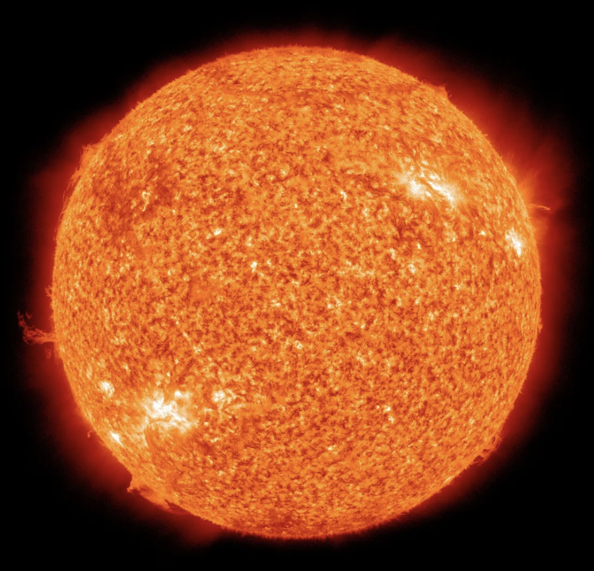
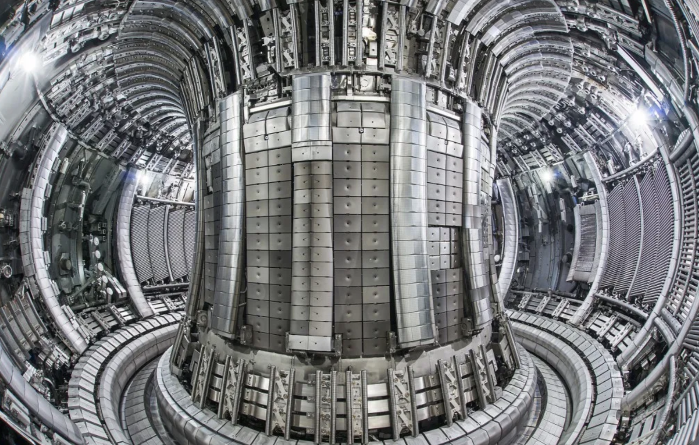
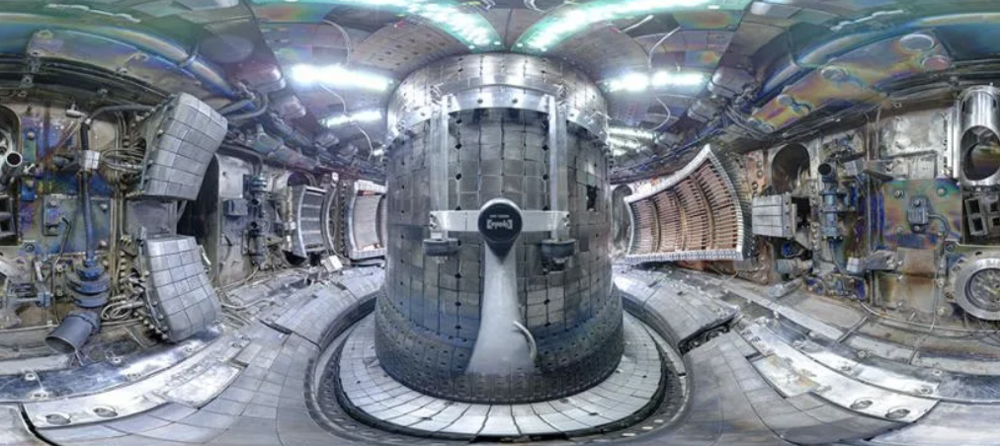
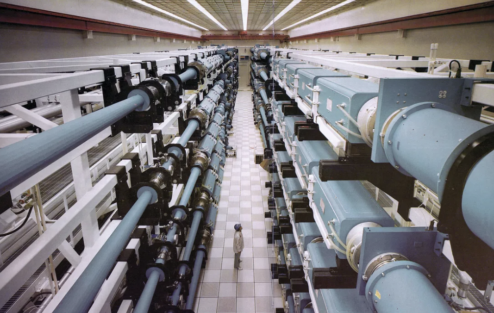
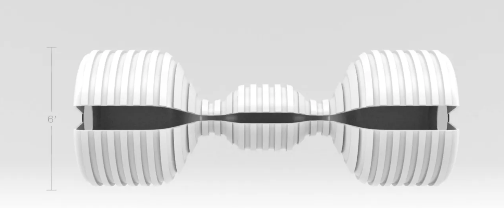

Energy is the fundamental idea that powers our universe, and for hundreds of years, mankind has found a myriad of ways to produce energy. A few of the common ones are by burning fossil fuels, splitting atoms, using kinetic energy, or sunlight striking photovoltaics.
However, all of these energy sources have inevitable consequences. Burning fuels releases toxic gases, nuclear plants produce nuclear waste, which is… well nuclear waste!!!. Wind energy is intermittent, and there aren’t large enough batteries yet to work on cloudy days.
But another common thing throughout mankind is the ability to innovate, and innovation has led us to the idea of harnessing unlimited power. But from where?
Believe it or not, we see infinite energy being produced every single day. Every second, the sun releases about 3.8×1²⁶ joules of energy. That’s enough energy to power the Earth for one year…. Not once, but a million times!!!
So how exactly do we produce virtually unlimited low radiation energy on earth by replicating the way the sun works?
To answer this question, let’s track back and first discover how the sun actually produces immense energy. All the phenomenons in the sun’s ability to produce energy is summed up in the words, Nuclear Fusion.
We can’t bring the sun on earth, but we can remake it on earth. Nuclear Fusion is essentially the idea of creating a mini-sun on our planet, allowing us to produce infinite amounts of energy with minimal radiation.
Simply put, nuclear fusion occurs when two light atomic nuclei combine to form a single heavier one, ensuing in massive energy release. Fusion reactions take place in a state of matter called plasma, which is a hot gas made of positive ions and free-moving electrons that has unique properties distinct from solids, liquids and gases.
Our closest star consists of trillions of atoms of hydrogen and helium, and these are the elements that create nuclear fusion. The nuclei(plural of nucleus) of all elements are positively charged thanks to their protons. However like charges repel each other, and to achieve Nuclear Fusion, a strong force is needed to overcome the repulsion and allow collision between the nuclei.
In the sun, this is easily achievable due to its immense heat and pressure. As the positively charged nuclei repel each other, billions of kilograms of pressure confines them close to each other, and topped off with the extreme heat, the particles move fast enough to collide and merge. This results in huge amounts of energy being released, giving it the name “Nuclear Fusion”.
A practical example of Nuclear Fusion is with an isotope of helium known as Helium-4, which consists of 2 protons and 2 neutrons. The atomic mass of Helium-4 is approximately 4.00153 amu. However, if you weighed the masses of 2 protons and 2 neutrons on their own, it would be approximately 4.03188 amu. The difference is minute, almost negligible.
But the energy went somewhere right? As long as we don’t breach the laws of physics, energy can’t be created or destroyed. Due to the Law of Conservation of Energy, the difference in the masses of the atom and the nucleons was due to energy being released when the particles were fused together.
A single proton doesn’t release any energy(0,0 on the graph). Fuse it with a neutron and you get deuterium(H²) which releases some energy. Fuse 2 deuteriums and you get a helium atom that releases even more energy. Like that, all elements have a certain binding energy, but as soon as the elements get heavier, the difference in binding energy decreases and less energy is released. Beyond Iron(Fe⁵⁶) atoms get so heavy, that they release energy not as they grow, but as they break apart. This is called Fission.
If you recall I said that “nuclear fusion occurs when two light atomic nuclei combine to form a single heavier one”. The reason “light atomic nuclei” combine to create Fusion is due to the Binding Energies.
Instead of combining two Deuterium particles, a more practical method is combing another hydrogen isotope called Tritium(H³) with Deuterium. The product is a helium nucleus and a spare neutron. This gives us the equation:
Deuterium + Tritium → Helium + neutron
H² + H³ → He⁴+ n
Remember Einstein’s famous equation? E = mc²
Well according to the equation, if we take 2 kilograms of deuterium, mix it with 3 kilograms of tritium, it will produce enough energy to power 50,000 homes for a year.
This tells us that reacting tritium and deuterium is the fundamental basis of achieving power from nuclear fusion, and that is the method used by scientists in fusion reactors.
Now that we know the technical details behind how fusion works, let’s discover how it would work on earth.
The sun’s powerful gravity provides energy for fusion to take place. But on earth, gravity is not an option, rather than that, we need to use intense heat, up-to 100,000,000 degrees Celsius. This is where the fusion reactors come in. There are two main types of machines that can make plasma hot enough to fuse nuclei. They are the Magnetic Confinement Reactors, and the Inertial Confinement Reactors.
Tokamak, stands for toroidal chamber magnetic coils, and is a donut shaped vessel with electromagnetic coils cooled with liquid helium at about absolute zero, or -269. It is the most advanced fusion reactor there is. For fusion to occur in a tokamak, the plasma in the reactor needs to be kept hot enough for fusion to occur. This is the job of the vertical and horizontal magnetic coils, that contain the plasma so that it doesn’t touch the walls. This is done because the particles in the fourth state of matter cool down rapidly when they touch the wall, not allowing fusion to take place.The fuels for the plasma are the isotopes of deuterium and tritium, which react at millions of degree celsius to produce energy. Right now, the reactors only job is to contain the plasma for as long as possible.
The most advanced Tokamak is currently at JET(Joint European Torus), in UK and holds the world record for the most fusion power produced. ITER, in France, on the other hand is the largest fusion experiment in the world with 35 countries collaborating on operating the machine.
A less common fusion experiment is done using Inertial Confinement Reactors. Some of the most powerful lasers in the world heat a pellet of contained fuel, which is a mixture of deuterium and tritium. The high beam lasers fire photons at only about 10 milligrams of fuel, which produces plasma hot enough to allow fusion.
The most notable Inertial Confinement Reactor is the National Ignition Facility in California, U.S, which has been conducting research on ICF for over 50 years.
These facilities around the world are currently holding experiments to achieve the dream of unlimited clean power. however, once again, everything has its drawbacks.
Deuterium and Tritium are the two stable isotopes of hydrogen that can be reacted to achieve fusion. Deuterium is easy to get, as it is available all across the oceans and can be separated using hydrolysis. Tritium on the other hand, is the trickier of the pair.
Tritium is radioactive, and its radiation makes it hard to detect. Currently, its believed that there is only about 20 grams of natural tritium on the planet, most of it in nuclear warheads. This also makes it highly expensive, averaging at about $30,000 per gram. It is still possible to make tritium by bombarding lithium with neutrons, all separated by a water-cooled reactor. But that is also highly expensive.
Scientists conducting research on the availability of tritium discovered that another atom, an isotope of helium works well to react with deuterium as well. Helium-3 is once again incredibly rare, but its Plan B nonetheless. If we can’t find enough Helium-3 on earth, the moon will have the answer.
The moon is billions of years old, and its experience facing the harsh solar winds of the sun, may well have allowed a huge deposit of helium-3 atoms to be be built on the moon. We can mine that helium-3 and bring it back to Earth to use in fusion reactors. This gives us another reason to believe in space travel if it wasn’t already convincing
What if a Fusion Reactor explodes?
You might be picturing an image like the one shown right after reading that question. But quick disclaimer: nothing like this is ever going to happen.
If a fusion reactor was to ever get out of hand, the 100 million centigrade plasma wouldn’t cause catastrophe like a Nuclear Plant’s radioactive materials would. As I mentioned before, plasma cools down rapidly when it comes in contact with other things, which is the sole reason massive magnets are used in the first place. Almost instantly after the containment of plasma is breached, the plasma will cool down, and kill the reaction, causing little to no harm.
Moreover, the radioactivity of tritium could be another problem, but tritium is scarce and only milligrams are used a time. If any tritium even managed to escape, it would only be overwhelmed by the environment, getting diluted almost instantly.
The real negative is the cost of investing in fusion energy. Almost 10 billion dollars have been spent on fusion energy, yet we are not sure if it will work or not. If fusion works, it has the potential of unlimited and viable energy, and the money will be well spent. On the other hand, a failure would result in the argument that fusion was a hopeless gamble.
The world is in a tight spot where quick action has to be taken to counter climate change, an event that has the potential of world destruction. It might be a smarter idea to invest in proven technologies like solar, and wind energy. Maybe we should cut our investment in fusion energy or later regret the payoff of harnessing unlimited power.
The arguments are endless, But one thing is evident, nuclear fusion will change the world.
I discussed JET, ITER, and NIF before. However all of these programs are national(JET & NIF) or international(ITER). The most notable private companies that have received funding for their work are Commonwealth Fusion Systems, and Helion Energy in the U.S.
Commonwealth Fusion Systems is a company that developed from MIT, and has a funding of almost $2 billion to achieve their goals. CFS is currently working on fusion energy systems, such as magnets, and devices that produce more efficient plasma.
Helion Energy on the other hand has achieved a significant milestone in the realm of fusion. With their new Plasma accelerator, Helion can heat plasma up to 100 million degrees, and use magnets to fuse deuterium and helium-3. Their powerful magnets then accelerate the two nuclei to produce more energy than used.
Although these are only two companies working on Nuclear Fusion, there are hundreds of others that believe in the power of Fusion Energy. Less than a few months ago, a major breakthrough was achieved in Fusion Energy at JET Fusion. The scientists at the lab were able to heat plasma for 5 full seconds, producing enough energy to power 60 kettles.
As we move one step closer to fusion energy, its benefits are outweighing the negatives. And hopefully, in the not so distant future, the determination and desire of thousands of scientists will pay off, in a better safer, and happier planet.
The power of the sun, in the palm of my hands.”- Dr. Otto Octavius